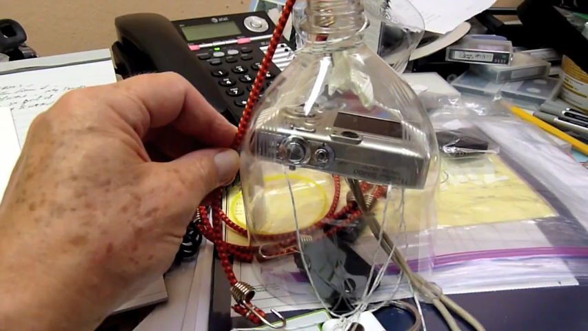
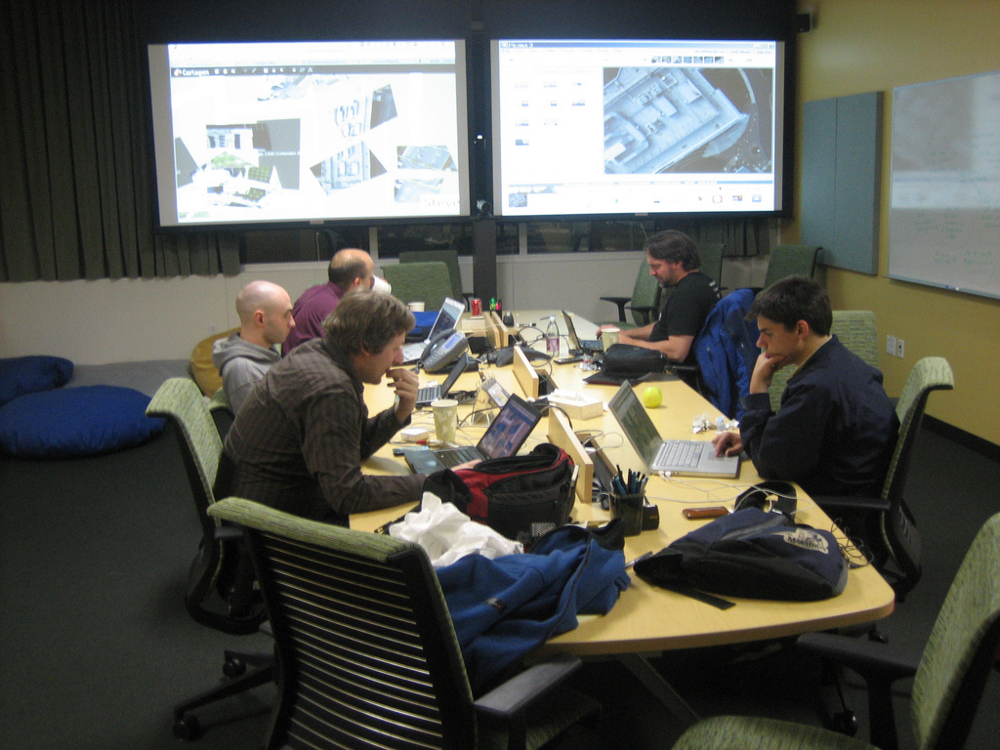

(correct passive voice)
Important to the development of the Grassroots Mapping tools was a collaborative process of testing various tools in a variety of contexts. Various combinations of tools were tested with participants from Lima, Peru, New Orleans, and Rock Creek, West Virginia. Verbal and interview-prompted feedback was used to develop new tools which built on the strengths of existing and off-the-shelf systems such as Photoshop, Hugin, and Map Warper. The same is true for the physical tools such as the balloon and kite kits, including the camera housing, reel construction, and auto-triggering setup.
| r0.5

|
In the case of the camera housing, Grassroots Mapping community members have iterated and improved upon the soda bottle enclosure, discussing and testing alternatives on the mailing list, and even posting videos of tests. Pat Coyle, a mailing list member, published a narrated demonstration of a soda bottle enclosure with improvements such as a window to access the camera controls and a small bungee cable to stabilize the camera against the inside of the bottle. In another example, Mathew Lippincott prototyped solar-powered hot air balloons constructed from painter's plastic sheeting, conducted pigmentation and lift tests to determine suitability for carrying cameras. The tests and builds were held at a public event in Portland, Oregon, and the resulting balloons were packaged and sent to New Orleans for use in the BP oil spill mapping (see Chapter 8).
Illustration of Mathew Lippincott's workshop
Regular testing of new tools at the MIT campus, as well as repeated attempts to orthorectify the resulting imagery, grounded the software development in concrete usage and experience, and a workshop at the Google campus in Mountain View in April 2010 included a collaborative hacking session aimed at identifying and resolving bugs and adding new features in direct response to the day's mapping efforts.
| r0.5

|
- requests made via list: stewart long asks for masking, Crispen asks for entry of lat/lon pairs, WhereCamp folks asked for locking, Pat Coyle asked for 'natural size' feature